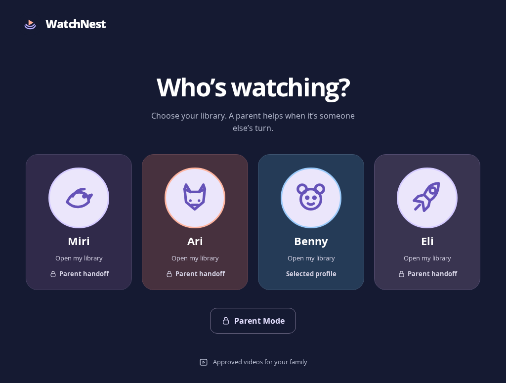
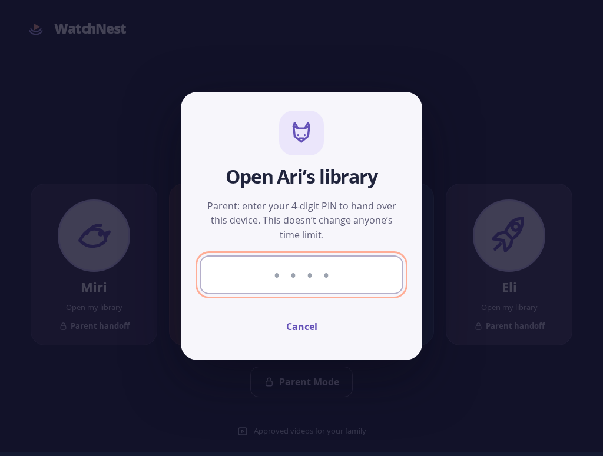
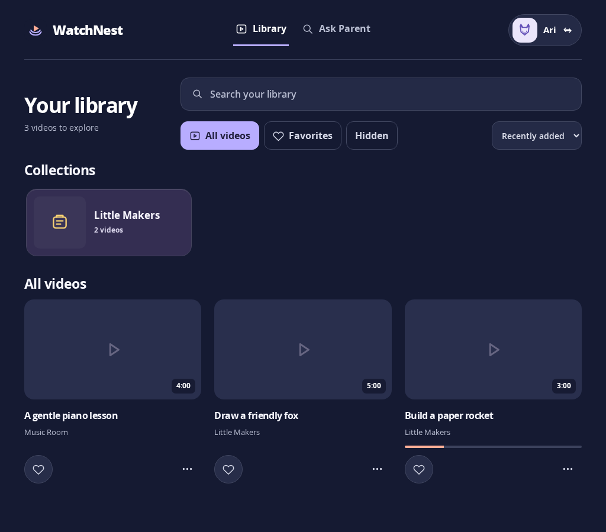
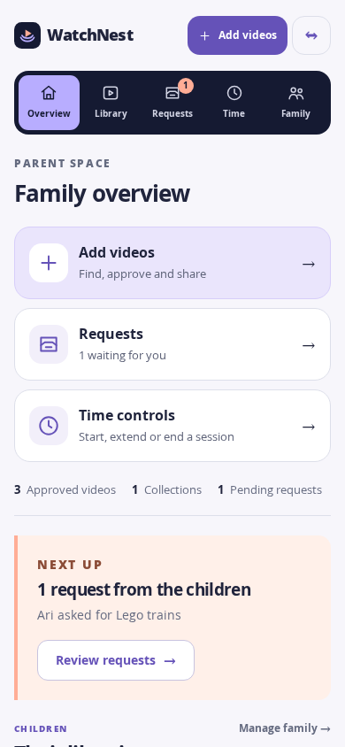
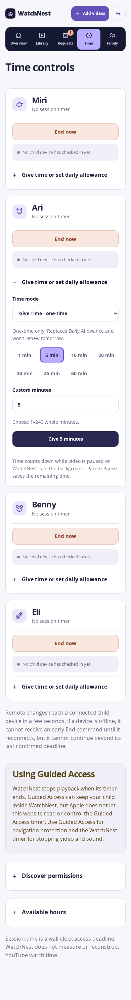
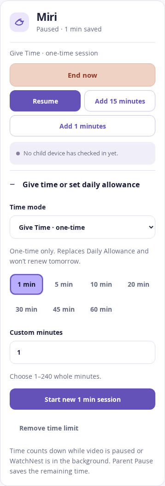
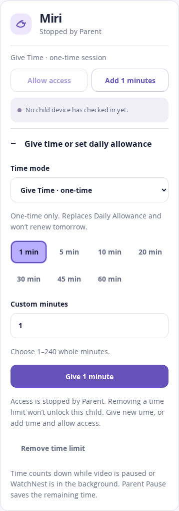
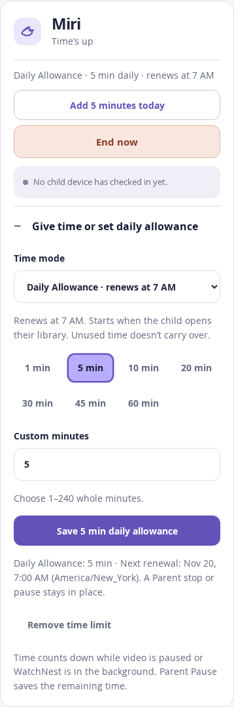

1. Child chooser Child tablet; start /watch. Purpose: choose own library.
Clear named cards, selected profile and Parent handoff language.
Disposition: Keep as is; no judgment required.
Founder judgment: none required for this repair.
Approve as is Approve recommendation Reject recommendation 
2. Target-specific Parent handoff Child tablet; Benny library → profile button → Ari.
Names target, explains Parent role and unchanged limit; visible focus and Cancel.
Disposition: Keep as is; no judgment required.
Founder judgment: none required for this repair.
Approve as is Approve recommendation Reject recommendation 
4. Handoff completion and refresh Child tablet; Parent PIN2468 → refresh.
Ari name visible; library retained after refresh. Synthetic thumbnails ungraded.
Disposition: Keep as is in inspected scope.
Founder judgment: none required for this repair.
Approve as is Approve recommendation Reject recommendation 
5. Parent overview phone Parent phone; clean separate context /parent/dashboard.
Overview clearly surfaces children, pending requests and Time access.
Disposition: Keep as is in inspected scope.
Founder judgment: none required for this repair.
Approve as is Approve recommendation Reject recommendation 
6. Parent Time phone Parent phone; Time → expand Ari.
Immediate End above editor; clear mode/preset/custom hierarchy. Save silence here is static fixture limitation.
Disposition: Keep as is; hosted persistence ungraded.
Founder judgment: none required for this repair.
Approve as is Approve recommendation Reject recommendation 
8. Paused one-minute session Parent phone; Give1minute → Pause; synthetic response/poll.
Clear saved time, Resume, End. Objective P3 S1: Add1minutes grammar.
Disposition: Later / Beta Observation; repair all affected branches before final polish.
Founder judgment: none required for this repair.
Approve as is Approve recommendation Reject recommendation 
9. Stopped by Parent Parent phone; Resume → End now; synthetic response/poll.
Explicit boundary: removing limit will not unlock. S1 repeated Add1minutes.
Disposition: Later / Beta Observation; same S1 repair.
Founder judgment: none required for this repair.
Approve as is Approve recommendation Reject recommendation 
10. Daily allowance exhausted Parent phone; selectDaily/save5 → synthetic expired snapshot.
Clear Time’s up, Add5minutes today, next7AM renewal and timezone.
Disposition: Keep as is in presentation scope.
Founder judgment: none required for this repair.
Approve as is Approve recommendation Reject recommendation